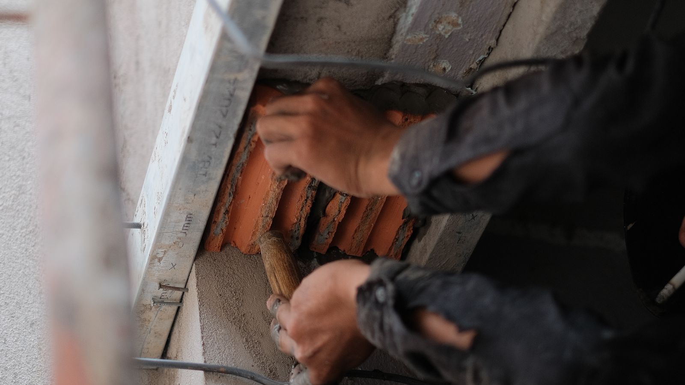

Foundation Crack Repair in Savannah, GA
The useful question about a foundation crack is not how to fill it. It is whether anything is still moving – because sealing a crack that's still opening just hides it for a season.
Concrete cracks. Some of it is ordinary curing shrinkage that appeared in the first year and has not changed since, and that genuinely is cosmetic. What matters is telling that apart from a crack that is tracking active movement in the footing below.
The pattern usually gives it away. Hairline vertical cracks in poured concrete are typically shrinkage. Stair-step cracks following the mortar joints in block or brick, cracks wider at one end than the other, and cracks that reopen after being patched are all movement – and the repair for those starts underneath, not at the surface.

Foundation Crack RepairWhat we look at
- Stair-step cracking through brick or block mortar joints
- Vertical and diagonal cracks in poured concrete walls and footings
- Cracks that are visibly wider at the top or bottom
- Horizontal cracking, which is the one that warrants urgency
- Cracks above door and window openings inside the house
- Separation where a porch, stoop, or addition meets the main structure
How each type gets handled
Non-structural cracks are sealed – epoxy or polyurethane injection that fills the crack through its full depth and keeps water and humidity out of the wall.
Cracks from active settlement need the settlement addressed first with piering. Sealing before stabilising is the most common wasted repair in this trade.
Horizontal cracks in a foundation wall indicate lateral pressure rather than settlement, and are assessed separately – this is the pattern that deserves a prompt look rather than a wait-and-see.
Where we are not sure, we say so and monitor: mark the crack, date it, measure it again. That costs you nothing and beats guessing.
What drives the cost
- Total length of cracking and the material – poured concrete, block, or brick
- Whether injection is enough or the underlying movement needs correcting
- Access to the affected wall, inside and out
- Whether water intrusion through the crack also needs addressing
Sealing work on its own is at the affordable end. What changes the number is whether the crack is a symptom of settlement, because then the real repair is stabilisation and the sealing is the last step rather than the whole job. The inspection is what tells the two apart, and it is free either way.
Free structural inspection
Elevation readings, a look at the actual failure, and a written scope with a real number – before you commit to anything.
Foundation Crack Repair – common questions
Which foundation cracks are actually serious?
Horizontal cracks are the ones to take seriously soonest, because they indicate pressure against the wall rather than settling beneath it. Stair-step cracks through mortar joints and any crack that keeps reopening after repair point to active movement. Fine vertical cracks in poured concrete that haven't changed in years are usually shrinkage and not a structural concern.
Can I just fill it with the sealant from the hardware store?
For a genuinely cosmetic hairline crack, that keeps water out and is a reasonable thing to do yourself. What it cannot do is tell you which kind of crack you have, and using it on a crack that's still moving means the filler splits and you've lost the ability to see whether it widened.
Does a crack mean my foundation is failing?
Usually not. Most of the cracks we're called out to look at turn out to be stable and non-structural, and that's a perfectly good outcome for an inspection – you get told it's fine and nothing is sold to you. The minority that are structural are worth finding early, which is the reason to have it looked at rather than guessed at.
Often done alongside this
Foundation Crack Repair across Chatham County
Want it looked at properly?
The inspection is free, and if the answer is that it can wait, that's what we'll tell you.